Although many textbooks provide good introductions to digital memory technology, I intend to make this chapter unique in presenting both past and present technologies to some degree of detail. While many of these memory designs are obsolete, their foundational principles are still quite interesting and educational, and may even find re-application in the memory technologies of the future.
The basic goal of digital memory is to provide a means to store and access binary data: sequences of 1's and 0's. The digital storage of information holds advantages over analog techniques much the same as digital communication of information holds advantages over analog communication. This is not to say that digital data storage is unequivocally superior to analog, but it does address some of the more common problems associated with analog techniques and thus finds immense popularity in both consumer and industrial applications. Digital data storage also complements digital computation technology well, and thus finds natural application in the world of computers.
The most evident advantage of digital data storage is the resistance to corruption. Suppose that we were going to store a piece of data regarding the magnitude of a voltage signal by means of magnetizing a small chunk of magnetic material. Since many magnetic materials retain their strength of magnetization very well over time, this would be a logical media candidate for long-term storage of this particular data (in fact, this is precisely how audio and video tape technology works: thin plastic tape is impregnated with particles of iron-oxide material, which can be magnetized or demagnetized via the application of a magnetic field from an electromagnet coil. The data is then retrieved from the tape by moving the magnetized tape past another coil of wire, the magnetized spots on the tape inducing voltage in that coil, reproducing the voltage waveform initially used to magnetize the tape).
If we represent an analog signal by the strength of magnetization on spots of the tape, the storage of data on the tape will be susceptible to the smallest degree of degradation of that magnetization. As the tape ages and the magnetization fades, the analog signal magnitude represented on the tape will appear to be less than what it was when we first recorded the data. Also, if any spurious magnetic fields happen to alter the magnetization on the tape, even if its only by a small amount, that altering of field strength will be interpreted upon re-play as an altering (or corruption) of the signal that was recorded. Since analog signals have infinite resolution, the smallest degree of change will have an impact on the integrity of the data storage.
If we were to use that same tape and store the data in binary digital form, however, the strength of magnetization on the tape would fall into two discrete levels: "high" and "low," with no valid in-between states. As the tape aged or was exposed to spurious magnetic fields, those same locations on the tape would experience slight alteration of magnetic field strength, but unless the alterations were extreme, no data corruption would occur upon re-play of the tape. By reducing the resolution of the signal impressed upon the magnetic tape, we've gained significant immunity to the kind of degradation and "noise" typically plaguing stored analog data. On the other hand, our data resolution would be limited to the scanning rate and the number of bits output by the A/D converter which interpreted the original analog signal, so the reproduction wouldn't necessarily be "better" than with analog, merely more rugged. With the advanced technology of modern A/D's, though, the tradeoff is acceptable for most applications.
Also, by encoding different types of data into specific binary number schemes, digital storage allows us to archive a wide variety of information that is often difficult to encode in analog form. Text, for example, is represented quite easily with the binary ASCII code, seven bits for each character, including punctuation marks, spaces, and carriage returns. A wider range of text is encoded using the Unicode standard, in like manner. Any kind of numerical data can be represented using binary notation on digital media, and any kind of information that can be encoded in numerical form (which almost any kind can!) is storable, too. Techniques such as parity and checksum error detection can be employed to further guard against data corruption, in ways that analog does not lend itself to.
When we store information in some kind of circuit or device, we not only need some way to store and retrieve it, but also to locate precisely where in the device that it is. Most, if not all, memory devices can be thought of as a series of mail boxes, folders in a file cabinet, or some other metaphor where information can be located in a variety of places. When we refer to the actual information being stored in the memory device, we usually refer to it as the data. The location of this data within the storage device is typically called the address, in a manner reminiscent of the postal service.
With some types of memory devices, the address in which certain data is stored can be called up by means of parallel data lines in a digital circuit (we'll discuss this in more detail later in this lesson). With other types of devices, data is addressed in terms of an actual physical location on the surface of some type of media (the tracks and sectors of circular computer disks, for instance). However, some memory devices such as magnetic tapes have a one-dimensional type of data addressing: if you want to play your favorite song in the middle of a cassette tape album, you have to fast-forward to that spot in the tape, arriving at the proper spot by means of trial-and-error, judging the approximate area by means of a counter that keeps track of tape position, and/or by the amount of time it takes to get there from the beginning of the tape. The access of data from a storage device falls roughly into two categories: random access and sequential access. Random access means that you can quickly and precisely address a specific data location within the device, and non-random simply means that you cannot. A vinyl record platter is an example of a random-access device: to skip to any song, you just position the stylus arm at whatever location on the record that you want (compact audio disks so the same thing, only they do it automatically for you). Cassette tape, on the other hand, is sequential. You have to wait to go past the other songs in sequence before you can access or address the song that you want to skip to.
The process of storing a piece of data to a memory device is called writing, and the process of retrieving data is called reading. Memory devices allowing both reading and writing are equipped with a way to distinguish between the two tasks, so that no mistake is made by the user (writing new information to a device when all you wanted to do is see what was stored there). Some devices do not allow for the writing of new data, and are purchased "pre-written" from the manufacturer. Such is the case for vinyl records and compact audio disks, and this is typically referred to in the digital world as read-only memory, or ROM. Cassette audio and video tape, on the other hand, can be re-recorded (re-written) or purchased blank and recorded fresh by the user. This is often called read-write memory.
Another distinction to be made for any particular memory technology is its volatility, or data storage permanence without power. Many electronic memory devices store binary data by means of circuits that are either latched in a "high" or "low" state, and this latching effect holds only as long as electric power is maintained to those circuits. Such memory would be properly referred to as volatile. Storage media such as magnetized disk or tape is nonvolatile, because no source of power is needed to maintain data storage. This is often confusing for new students of computer technology, because the volatile electronic memory typically used for the construction of computer devices is commonly and distinctly referred to as RAM (Random Access Memory). While RAM memory is typically randomly-accessed, so is virtually every other kind of memory device in the computer! What "RAM" really refers to is the volatility of the memory, and not its mode of access. Nonvolatile memory integrated circuits in personal computers are commonly (and properly) referred to as ROM (Read-Only Memory), but their data contents are accessed randomly, just like the volatile memory circuits!
Finally, there needs to be a way to denote how much data can be stored by any particular memory device. This, fortunately for us, is very simple and straightforward: just count up the number of bits (or bytes, 1 byte = 8 bits) of total data storage space. Due to the high capacity of modern data storage devices, metric prefixes are generally affixed to the unit of bytes in order to represent storage space: 1.6 Gigabytes is equal to 1.6 billion bytes, or 12.8 billion bits, of data storage capacity. The only caveat here is to be aware of rounded numbers. Because the storage mechanisms of many random-access memory devices are typically arranged so that the number of "cells" in which bits of data can be stored appears in binary progression (powers of 2), a "one kilobyte" memory device most likely contains 1024 (2 to the power of 10) locations for data bytes rather than exactly 1000. A "64 kbyte" memory device actually holds 65,536 bytes of data (2 to the 16th power), and should probably be called a "66 Kbyte" device to be more precise. When we round numbers in our base-10 system, we fall out of step with the round equivalents in the base-2 system.
Now we can proceed to studying specific types of digital storage devices. To start, I want to explore some of the technologies which do not require any moving parts. These are not necessarily the newest technologies, as one might suspect, although they will most likely replace moving-part technologies in the future.
A very simple type of electronic memory is the bistable multivibrator. Capable of storing a single bit of data, it is volatile (requiring power to maintain its memory) and very fast. The D-latch is probably the simplest implementation of a bistable multivibrator for memory usage, the D input serving as the data "write" input, the Q output serving as the "read" output, and the enable input serving as the read/write control line:
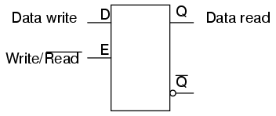
If we desire more than one bit's worth of storage (and we probably do), we'll have to have many latches arranged in some kind of an array where we can selectively address which one (or which set) we're reading from or writing to. Using a pair of tristate buffers, we can connect both the data write input and the data read output to a common data bus line, and enable those buffers to either connect the Q output to the data line (READ), connect the D input to the data line (WRITE), or keep both buffers in the High-Z state to disconnect D and Q from the data line (unaddressed mode). One memory "cell" would look like this, internally:
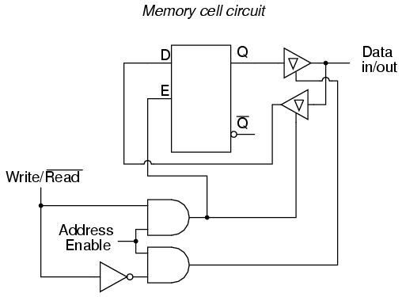
When the address enable input is 0, both tristate buffers will be placed in high-Z mode, and the latch will be disconnected from the data input/output (bus) line. Only when the address enable input is active (1) will the latch be connected to the data bus. Every latch circuit, of course, will be enabled with a different "address enable" (AE) input line, which will come from a 1-of-n output decoder:
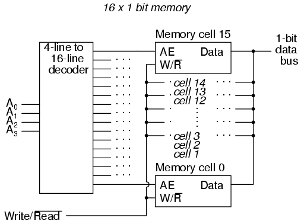
In the above circuit, 16 memory cells are individually addressed with a 4-bit binary code input into the decoder. If a cell is not addressed, it will be disconnected from the 1-bit data bus by its internal tristate buffers: consequently, data cannot be either written or read through the bus to or from that cell. Only the cell circuit that is addressed by the 4-bit decoder input will be accessible through the data bus.
This simple memory circuit is random-access and volatile. Technically, it is known as a static RAM. Its total memory capacity is 16 bits. Since it contains 16 addresses and has a data bus that is 1 bit wide, it would be designated as a 16 x 1 bit static RAM circuit. As you can see, it takes an incredible number of gates (and multiple transistors per gate!) to construct a practical static RAM circuit. This makes the static RAM a relatively low-density device, with less capacity than most other types of RAM technology per unit IC chip space. Because each cell circuit consumes a certain amount of power, the overall power consumption for a large array of cells can be quite high. Early static RAM banks in personal computers consumed a fair amount of power and generated a lot of heat, too. CMOS IC technology has made it possible to lower the specific power consumption of static RAM circuits, but low storage density is still an issue.
To address this, engineers turned to the capacitor instead of the bistable multivibrator as a means of storing binary data. A tiny capacitor could serve as a memory cell, complete with a single MOSFET transistor for connecting it to the data bus for charging (writing a 1), discharging (writing a 0), or reading. Unfortunately, such tiny capacitors have very small capacitances, and their charge tends to "leak" away through any circuit impedances quite rapidly. To combat this tendency, engineers designed circuits internal to the RAM memory chip which would periodically read all cells and recharge (or "refresh") the capacitors as needed. Although this added to the complexity of the circuit, it still required far less componentry than a RAM built of multivibrators. They called this type of memory circuit a dynamic RAM, because of its need of periodic refreshing.
Recent advances in IC chip manufacturing has led to the introduction of flash memory, which works on a capacitive storage principle like the dynamic RAM, but uses the insulated gate of a MOSFET as the capacitor itself.
Before the advent of transistors (especially the MOSFET), engineers had to implement digital circuitry with gates constructed from vacuum tubes. As you can imagine, the enormous comparative size and power consumption of a vacuum tube as compared to a transistor made memory circuits like static and dynamic RAM a practical impossibility. Other, rather ingenious, techniques to store digital data without the use of moving parts were developed.
Perhaps the most ingenious technique was that of the delay line. A delay line is any kind of device which delays the propagation of a pulse or wave signal. If you've ever heard a sound echo back and forth through a canyon or cave, you've experienced an audio delay line: the noise wave travels at the speed of sound, bouncing off of walls and reversing direction of travel. The delay line "stores" data on a very temporary basis if the signal is not strengthened periodically, but the very fact that it stores data at all is a phenomenon exploitable for memory technology.
Early computer delay lines used long tubes filled with liquid mercury, which was used as the physical medium through which sound waves traveled along the length of the tube. An electrical/sound transducer was mounted at each end, one to create sound waves from electrical impulses, and the other to generate electrical impulses from sound waves. A stream of serial binary data was sent to the transmitting transducer as a voltage signal. The sequence of sound waves would travel from left to right through the mercury in the tube and be received by the transducer at the other end. The receiving transducer would receive the pulses in the same order as they were transmitted:
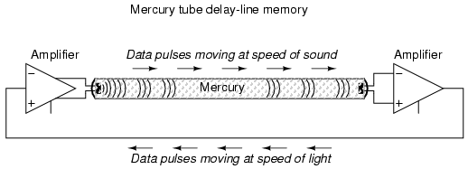
A feedback circuit connected to the receiving transducer would drive the transmitting transducer again, sending the same sequence of pulses through the tube as sound waves, storing the data as long as the feedback circuit continued to function. The delay line functioned like a first-in-first-out (FIFO) shift register, and external feedback turned that shift register behavior into a ring counter, cycling the bits around indefinitely.
The delay line concept suffered numerous limitations from the materials and technology that were then available. The EDVAC computer of the early 1950's used 128 mercury-filled tubes, each one about 5 feet long and storing a maximum of 384 bits. Temperature changes would affect the speed of sound in the mercury, thus skewing the time delay in each tube and causing timing problems. Later designs replaced the liquid mercury medium with solid rods of glass, quartz, or special metal that delayed torsional (twisting) waves rather than longitudinal (lengthwise) waves, and operated at much higher frequencies.
One such delay line used a special nickel-iron-titanium wire (chosen for its good temperature stability) about 95 feet in length, coiled to reduce the overall package size. The total delay time from one end of the wire to the other was about 9.8 milliseconds, and the highest practical clock frequency was 1 MHz. This meant that approximately 9800 bits of data could be stored in the delay line wire at any given time. Given different means of delaying signals which wouldn't be so susceptible to environmental variables (such as serial pulses of light within a long optical fiber), this approach might someday find re-application.
Another approach experimented with by early computer engineers was the use of a cathode ray tube (CRT), the type commonly used for oscilloscope, radar, and television viewscreens, to store binary data. Normally, the focused and directed electron beam in a CRT would be used to make bits of phosphor chemical on the inside of the tube glow, thus producing a viewable image on the screen. In this application, however, the desired result was the creation of an electric charge on the glass of the screen by the impact of the electron beam, which would then be detected by a metal grid placed directly in front of the CRT. Like the delay line, the so-called Williams Tube memory needed to be periodically refreshed with external circuitry to retain its data. Unlike the delay line mechanisms, it was virtually immune to the environmental factors of temperature and vibration. The IBM model 701 computer sported a Williams Tube memory with 4 Kilobyte capacity and a bad habit of "overcharging" bits on the tube screen with successive re-writes so that false "1" states might overflow to adjacent spots on the screen.
The next major advance in computer memory came when engineers turned to magnetic materials as a means of storing binary data. It was discovered that certain compounds of iron, namely "ferrite," possessed hysteresis curves that were almost square:
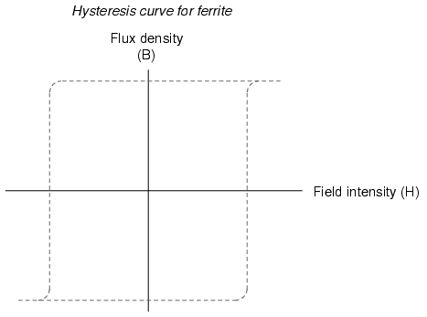
Shown on a graph with the strength of the applied magnetic field on the horizontal axis (field intensity), and the actual magnetization (orientation of electron spins in the ferrite material) on the vertical axis (flux density), ferrite won't become magnetized one direction until the applied field exceeds a critical threshold value. Once that critical value is exceeded, the electrons in the ferrite "snap" into magnetic alignment and the ferrite becomes magnetized. If the applied field is then turned off, the ferrite maintains full magnetism. To magnetize the ferrite in the other direction (polarity), the applied magnetic field must exceed the critical value in the opposite direction. Once that critical value is exceeded, the electrons in the ferrite "snap" into magnetic alignment in the opposite direction. Once again, if the applied field is then turned off, the ferrite maintains full magnetism. To put it simply, the magnetization of a piece of ferrite is "bistable."
Exploiting this strange property of ferrite, we can use this natural magnetic "latch" to store a binary bit of data. To set or reset this "latch," we can use electric current through a wire or coil to generate the necessary magnetic field, which will then be applied to the ferrite. Jay Forrester of MIT applied this principle in inventing the magnetic "core" memory, which became the dominant computer memory technology during the 1970's.
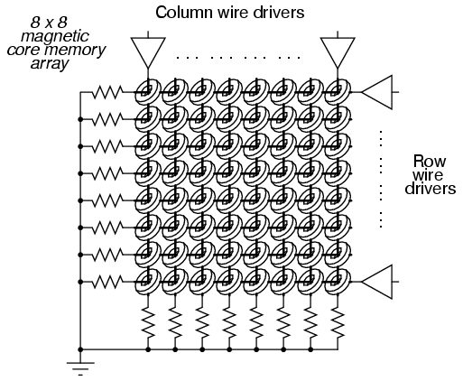
A grid of wires, electrically insulated from one another, crossed through the center of many ferrite rings, each of which being called a "core." As DC current moved through any wire from the power supply to ground, a circular magnetic field was generated around that energized wire. The resistor values were set so that the amount of current at the regulated power supply voltage would produce slightly more than 1/2 the critical magnetic field strength needed to magnetize any one of the ferrite rings. Therefore, if column #4 wire was energized, all the cores on that column would be subjected to the magnetic field from that one wire, but it would not be strong enough to change the magnetization of any of those cores. However, if column #4 wire and row #5 wire were both energized, the core at that intersection of column #4 and row #5 would be subjected to a sum of those two magnetic fields: a magnitude strong enough to "set" or "reset" the magnetization of that core. In other words, each core was addressed by the intersection of row and column. The distinction between "set" and "reset" was the direction of the core's magnetic polarity, and that bit value of data would be determined by the polarity of the voltages (with respect to ground) that the row and column wires would be energized with.
The following photograph shows a core memory board from a Data General brand, "Nova" model computer, circa late 1960's or early 1970's. It had a total storage capacity of 4 kbytes (that's kilobytes, not megabytes!). A ball-point pen is shown for size comparison:
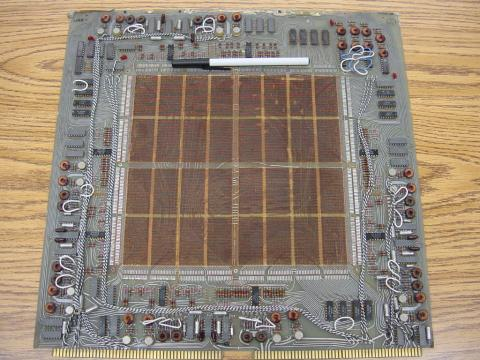
The electronic components seen around the periphery of this board are used for "driving" the column and row wires with current, and also to read the status of a core. A close-up photograph reveals the ring-shaped cores, through which the matrix wires thread. Again, a ball-point pen is shown for size comparison:
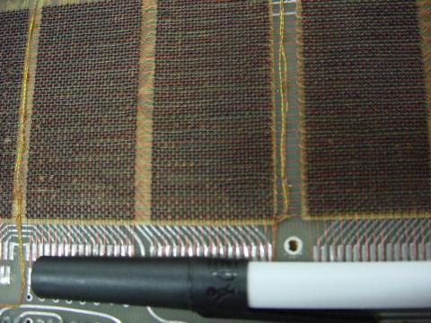
A core memory board of later design (circa 1971) is shown in the next photograph. Its cores are much smaller and more densely packed, giving more memory storage capacity than the former board (8 kbytes instead of 4 kbytes):
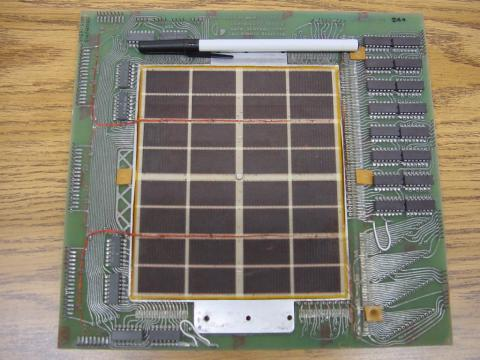
And, another close-up of the cores:
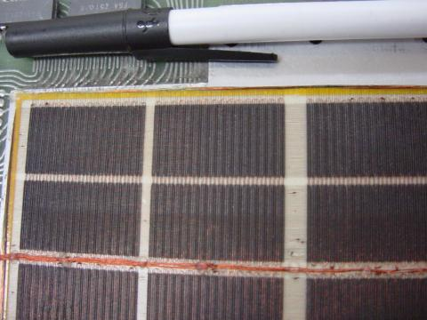
Writing data to core memory was easy enough, but reading that data was a bit of a trick. To facilitate this essential function, a "read" wire was threaded through all the cores in a memory matrix, one end of it being grounded and the other end connected to an amplifier circuit. A pulse of voltage would be generated on this "read" wire if the addressed core changed states (from 0 to 1, or 1 to 0). In other words, to read a core's value, you had to write either a 1 or a 0 to that core and monitor the voltage induced on the read wire to see if the core changed. Obviously, if the core's state was changed, you would have to re-set it back to its original state, or else the data would have been lost. This process is known as a destructive read, because data may be changed (destroyed) as it is read. Thus, refreshing is necessary with core memory, although not in every case (that is, in the case of the core's state not changing when either a 1 or a 0 was written to it).
One major advantage of core memory over delay lines and Williams Tubes was nonvolatility. The ferrite cores maintained their magnetization indefinitely, with no power or refreshing required. It was also relatively easy to build, denser, and physically more rugged than any of its predecessors. Core memory was used from the 1960's until the late 1970's in many computer systems, including the computers used for the Apollo space program, CNC machine tool control computers, business ("mainframe") computers, and industrial control systems. Despite the fact that core memory is long obsolete, the term "core" is still used sometimes with reference to a computer's RAM memory.
All the while that delay lines, Williams Tube, and core memory technologies were being invented, the simple static RAM was being improved with smaller active component (vacuum tube or transistor) technology. Static RAM was never totally eclipsed by its competitors: even the old ENIAC computer of the 1950's used vacuum tube ring-counter circuitry for data registers and computation. Eventually though, smaller and smaller scale IC chip manufacturing technology gave transistors the practical edge over other technologies, and core memory became a museum piece in the 1980's.
One last attempt at a magnetic memory better than core was the bubble memory. Bubble memory took advantage of a peculiar phenomenon in a mineral called garnet, which, when arranged in a thin film and exposed to a constant magnetic field perpendicular to the film, supported tiny regions of oppositely-magnetized "bubbles" that could be nudged along the film by prodding with other external magnetic fields. "Tracks" could be laid on the garnet to focus the movement of the bubbles by depositing magnetic material on the surface of the film. A continuous track was formed on the garnet which gave the bubbles a long loop in which to travel, and motive force was applied to the bubbles with a pair of wire coils wrapped around the garnet and energized with a 2-phase voltage. Bubbles could be created or destroyed with a tiny coil of wire strategically placed in the bubbles' path.
The presence of a bubble represented a binary "1" and the absence of a bubble represented a binary "0." Data could be read and written in this chain of moving magnetic bubbles as they passed by the tiny coil of wire, much the same as the read/write "head" in a cassette tape player, reading the magnetization of the tape as it moves. Like core memory, bubble memory was nonvolatile: a permanent magnet supplied the necessary background field needed to support the bubbles when the power was turned off. Unlike core memory, however, bubble memory had phenomenal storage density: millions of bits could be stored on a chip of garnet only a couple of square inches in size. What killed bubble memory as a viable alternative to static and dynamic RAM was its slow, sequential data access. Being nothing more than an incredibly long serial shift register (ring counter), access to any particular portion of data in the serial string could be quite slow compared to other memory technologies.
An electrostatic equivalent of the bubble memory is the Charge-Coupled Device (CCD) memory, an adaptation of the CCD devices used in digital photography. Like bubble memory, the bits are serially shifted along channels on the substrate material by clock pulses. Unlike bubble memory, the electrostatic charges decay and must be refreshed. CCD memory is therefore volatile, with high storage density and sequential access. Interesting, isn't it? The old Williams Tube memory was adapted from CRT viewing technology, and CCD memory from video recording technology.
Read-only memory (ROM) is similar in design to static or dynamic RAM circuits, except that the "latching" mechanism is made for one-time (or limited) operation. The simplest type of ROM is that which uses tiny "fuses" which can be selectively blown or left alone to represent the two binary states. Obviously, once one of the little fuses is blown, it cannot be made whole again, so the writing of such ROM circuits is one-time only. Because it can be written (programmed) once, these circuits are sometimes referred to as PROMs (Programmable Read-Only Memory).
However, not all writing methods are as permanent as blown fuses. If a transistor latch can be made which is resettable only with significant effort, a memory device that's something of a cross between a RAM and a ROM can be built. Such a device is given a rather oxymoronic name: the EPROM (Erasable Programmable Read-Only Memory). EPROMs come in two basic varieties: Electrically-erasable (EEPROM) and Ultraviolet-erasable (UV/EPROM). Both types of EPROMs use capacitive charge MOSFET devices to latch on or off. UV/EPROMs are "cleared" by long-term exposure to ultraviolet light. They are easy to identify: they have a transparent glass window which exposes the silicon chip material to light. Once programmed, you must cover that glass window with tape to prevent ambient light from degrading the data over time. EPROMs are often programmed using higher signal voltages than what is used during "read-only" mode.
The earliest forms of digital data storage involving moving parts was that of the punched paper card. Joseph Marie Jacquard invented a weaving loom in 1780 which automatically followed weaving instructions set by carefully placed holes in paper cards. This same technology was adapted to electronic computers in the 1950's, with the cards being read mechanically (metal-to-metal contact through the holes), pneumatically (air blown through the holes, the presence of a hole sensed by air nozzle backpressure), or optically (light shining through the holes).
An improvement over paper cards is the paper tape, still used in some industrial environments (notably the CNC machine tool industry), where data storage and speed demands are low and ruggedness is highly valued. Instead of wood-fiber paper, mylar material is often used, with optical reading of the tape being the most popular method.
Magnetic tape (very similar to audio or video cassette tape) was the next logical improvement in storage media. It is still widely used today, as a means to store "backup" data for archiving and emergency restoration for other, faster methods of data storage. Like paper tape, magnetic tape is sequential access, rather than random access. In early home computer systems, regular audio cassette tape was used to store data in modulated form, the binary 1's and 0's represented by different frequencies (similar to FSK data communication). Access speed was terribly slow (if you were reading ASCII text from the tape, you could almost keep up with the pace of the letters appearing on the computer's screen!), but it was cheap and fairly reliable.
Tape suffered the disadvantage of being sequential access. To address this weak point, magnetic storage "drives" with disk- or drum-shaped media were built. An electric motor provided constant-speed motion. A movable read/write coil (also known as a "head") was provided which could be positioned via servo-motors to various locations on the height of the drum or the radius of the disk, giving access that is almost random (you might still have to wait for the drum or disk to rotate to the proper position once the read/write coil has reached the right location).
The disk shape lent itself best to portable media, and thus the floppy disk was born. Floppy disks (so-called because the magnetic media is thin and flexible) were originally made in 8-inch diameter formats. Later, the 5-1/4 inch variety was introduced, which was made practical by advances in media particle density. All things being equal, a larger disk has more space upon which to write data. However, storage density can be improved by making the little grains of iron-oxide material on the disk substrate smaller. Today, the 3-1/2 inch floppy disk is the preeminent format, with a capacity of 1.44 Mbytes (2.88 Mbytes on SCSI drives). Other portable drive formats are becoming popular, with IoMega's 100 Mbyte "ZIP" and 1 Gbyte "JAZ" disks appearing as original equipment on some personal computers.
Still, floppy drives have the disadvantage of being exposed to harsh environments, being constantly removed from the drive mechanism which reads, writes, and spins the media. The first disks were enclosed units, sealed from all dust and other particulate matter, and were definitely not portable. Keeping the media in an enclosed environment allowed engineers to avoid dust altogether, as well as spurious magnetic fields. This, in turn, allowed for much closer spacing between the head and the magnetic material, resulting in a much tighter-focused magnetic field to write data to the magnetic material.
The following photograph shows a hard disk drive "platter" of approximately 30 Mbytes storage capacity. A ball-point pen has been set near the bottom of the platter for size reference:
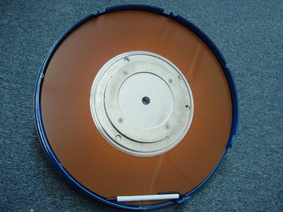
Modern disk drives use multiple platters made of hard material (hence the name, "hard drive") with multiple read/write heads for every platter. The gap between head and platter is much smaller than the diameter of a human hair. If the hermetically-sealed environment inside a hard disk drive is contaminated with outside air, the hard drive will be rendered useless. Dust will lodge between the heads and the platters, causing damage to the surface of the media.
Here is a hard drive with four platters, although the angle of the shot only allows viewing of the top platter. This unit is complete with drive motor, read/write heads, and associated electronics. It has a storage capacity of 340 Mbytes, and is about the same length as the ball-point pen shown in the previous photograph:
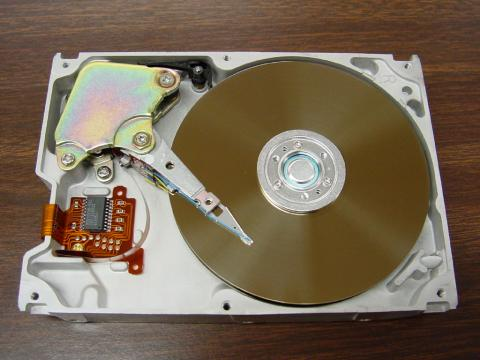
While it is inevitable that non-moving-part technology will replace mechanical drives in the future, current state-of-the-art electromechanical drives continue to rival "solid-state" nonvolatile memory devices in storage density, and at a lower cost. In 1998, a 250 Mbyte hard drive was announced that was approximately the size of a quarter (smaller than the metal platter hub in the center of the last hard disk photograph)! In any case, storage density and reliability will undoubtedly continue to improve.
An incentive for digital data storage technology advancement was the advent of digitally encoded music. A joint venture between Sony and Phillips resulted in the release of the "compact audio disc" (CD) to the public in the late 1980's. This technology is a read-only type, the media being a transparent plastic disc backed by a thin film of aluminum. Binary bits are encoded as pits in the plastic which vary the path length of a low-power laser beam. Data is read by the low-power laser (the beam of which can be focused more precisely than normal light) reflecting off the aluminum to a photocell receiver.
The advantages of CDs over magnetic tape are legion. Being digital, the information is highly resistant to corruption. Being non-contact in operation, there is no wear incurred through playing. Being optical, they are immune to magnetic fields (which can easily corrupt data on magnetic tape or disks). It is possible to purchase CD "burner" drives which contain the high-power laser necessary to write to a blank disc.
Following on the heels of the music industry, the video entertainment industry has leveraged the technology of optical storage with the introduction of the Digital Video Disc, or DVD. Using a similar-sized plastic disc as the music CD, a DVD employs closer spacing of pits to achieve much greater storage density. This increased density allows feature-length movies to be encoded on DVD media, complete with trivia information about the movie, director's notes, and so on.
Much effort is being directed toward the development of a practical read/write optical disc (CD-W). Success has been found in using chemical substances whose color may be changed through exposure to bright laser light, then "read" by lower-intensity light. These optical discs are immediately identified by their characteristically colored surfaces, as opposed to the silver-colored underside of a standard CD.
Lessons In Electric Circuits copyright (C) 2000-2023 Tony R. Kuphaldt, under the terms and conditions of the CC BY License.